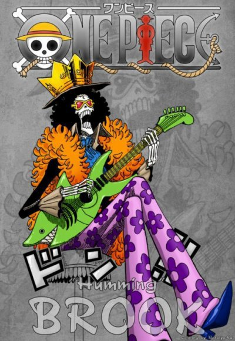

Brook (ブルック, Burukku?) est un personnage du manga One Piece. Il s’agit d'un homme qui, ayant mangé le Fruit de la Résurrection (Yomi Yomi no Mi), a pris l’apparence d’un squelette. La présence de Laboon auprès de son ancien équipage présume que tout comme Nico Robin, Brook est originaire de West blue.
Déjà pirate avant l'époque de Roger, il navigue pour la première fois sur Grand Line en tant que vice-capitaine de L'équipage du Rumbar. Laissant leur animal de compagnie Laboon à Reverse Mountain, ils promettent de revenir après avoir navigué à travers le monde. Cinquante ans plus tard, le but de Brook est toujours de tenir la promesse de son défunt équipage.
Neuvième membre à rejoindre l'équipage du chapeau de paille suite au périple de Thriller Bark, il est également l'un des deux épéistes, l'autre étant Roronoa Zoro. Le capitaine Luffy rêvant d'avoir un musicien à bord (chose qu’il désirait depuis le début de son aventure) et parce qu'il est très attaché à son apparence squelettique.
C'est un excellent musicien, qui dit qu'il peut jouer de n'importe quel instrument, bien qu'on le voit généralement jouer du violon; il peut influencer les gens avec sa musique au point de les endormir.
Deux ans plus tard après les évènements sur l’île de l'archipel des sabaody séparé des autres membre de l'équipage du Chapeaux de Paille, Brook acquiert une renommée mondiale en remplissant les salles de concert en tant que musicien célèbre sous le nom de « Soul King ».
voix japonaise :Chō
voix francaise :Maxime Donnay
fruit du demon :Yomi Yomi no Mi
prime :83 milLions berry
